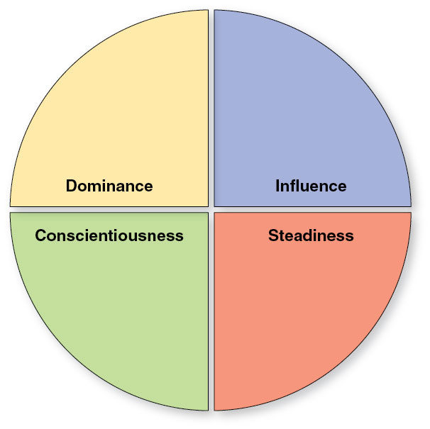
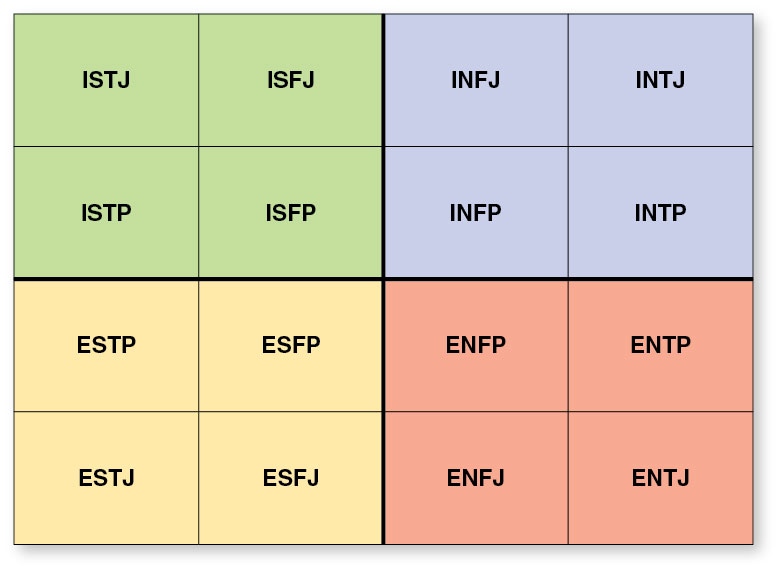

Self-assessment can help you better determine your values and interests, recognize your areas of strength and opportunity, and become more aware of your own thinking and behavior.
Much of communicating at the college level takes place through writing, but developing strong writing and communication skills will benefit you long after you finish college.
CHAPTER FOUR
Assessing Yourself
marchmeena29/iStock/Getty Images Plus
Learning Outcomes
After reading this chapter, you should be able to:
Explain the value of assessing yourself in terms of both learning and personal growth.
Identify the purposes of the different types of self-assessments.
To assess is to examine and assign quality or worth. In education, student learning is often assessed through exams and assignments, which are evaluated and graded to determine the quality of learning. In psychology, assessments have been developed to evaluate individual traits and tendencies. These psychological assessments are not intended to grade and assign value but rather to place individuals into certain “types” or groups that share the qualities being measured. The purpose of self-assessment is to determine where you fit into these types or groups and to make you aware of qualities you possess that you may not have otherwise recognized.
The self-assessments discussed in this chapter are based on theories developed by researchers in the fields of sociology and differential, personality, and developmental psychology. These researchers based their assessments on decades of research on how people differ from one another, how they interpret the meaning of their experiences, how they develop a concept of “self” over time, and how they tend to interact with others. Students often take self-assessments to better determine their values and interests and to recognize their areas of both strength and opportunity. In this way, self-assessments can assist students in finding a career path and academic degree and can help them become more aware of their own natural tendencies of thinking and behavior.
As you consider the assessment tools discussed in this chapter, keep in mind that self-assessments are not intended to limit individuals to the characteristics and preferences of their “type” but rather are intended to serve as a starting point for self-awareness and self-reflection that can help you further grow in the direction of your goals.
4.1The Value of Self-Assessments
Research studying the attributes of successful people has consistently demonstrated the importance of self-reflection. Individuals tend to be most successful when they periodically reflect on their values, decisions, behaviors, and what they regularly learn about themselves and others (Argyris & Schon, 1974; Fullan, 2001; Osterman & Kottkamp, 2004; Shields, 2010). Part of self-assessment is this act of self-reflection. Self-assessments further clarify and illustrate the specific characteristics of your type and provide some language for you to better describe your habits of thinking, responding, and behaving. You can use this knowledge of yourself to decide whether to build on or change those habits.
Self-assessment results are often formatted to provide a description of your type(s) and then to define the research-based strengths and areas of opportunity of that type. You can use these results to set personal-development goals to improve relationship skills, develop as a leader, discover new strategies to promote learning, and chart pathways to academic and career success. Knowing your strengths and areas of opportunity can help you set goals consistent with your skills, as well as determine goals for improvement. Equally important is the ability to communicate your strengths and areas of opportunity using language that communicates your value to others, while recognizing areas where you can continue to develop. Self-awareness about both talents and flaws demonstrates significant maturity, particularly when communicated during job interviews or other professional-development discussions.
Recognizing Strengths
Ilkercelik/iStock/Getty Images Plus
Believing you can do something makes you more motivated and focused on the task you’re trying to complete or the goal you want to achieve.
Recognizing your strengths contributes to your belief in your own ability to succeed at a task or achieve a goal. Believing that you’re capable of succeeding and are in control of your ability to succeed is called self-efficacy. Self-efficacy is critical to achieving success. Consider the converse: If you don’t believe that you’re able to do something, you will be unlikely to set it as a goal or contribute any time or effort to achieving it. Why waste your time if it’s not something you believe you can do? But believing a task is within your ability or is in fact a strength can provide considerable intrinsic motivation to keep you focused and energized.
Identifying your strengths can also clarify academic or career pathways you may want to pursue. Career-focused self-assessments in particular help match your abilities with fields of potential interest. Career-development theories suggest that building on your strengths can help lead to the most successful and personally fulfilling career.
Identifying Areas of Opportunity
Recognizing your areas of opportunity is just as valuable as recognizing your strengths. Once you identify areas in which you can improve, you may decide to focus your time and energy on developing your skills in those areas. For example, if you have trouble communicating publicly, you may decide to develop your communication skills by taking a public speaking course, trying to ask more questions in your classes, or even a joining a social group like Toastmasters to practice and build your skills.
Conversely, awareness of your areas of opportunity may help deter you from certain academic and career pathways that are ill aligned with your strengths and abilities. Working on these areas may not always be a worthwhile use of your time if you are open to pursuing a path more consistent with your natural talents. While self-assessments usually share advice for improving in these areas, theories that support self-assessments differ in their opinion on whether doing so (when you have a choice) is a good use of your time. As you set goals and plan for the future, you can determine if following this advice is right for you.
4.2Types of Self-Assessments
Though similar in format, self-assessments can be divided into two types based on what their results are intended to do. The results of personality type assessments are intended to clarify preferred approaches to learning, define strong motivators, and predict how individuals will handle feedback or work in teams. Personality type assessments tend to measure behavioral style and provide insight on how best to maintain motivation to achieve your goals. The results of academic and career-focused assessments, on the other hand, help determine which goals are most fitting to individual interests, skills, and values. Regardless of their theoretical intention, both personality type and academic and career-focused self-assessments are often used somewhat interchangeably in colleges and by career counselors to help individuals better clarify their interests and work styles and plan accordingly.
Personality Type Self-Assessments
There have been a number of theories surrounding the idea that different personality types may prefer different kinds of learning. Understanding how personality traits are categorized can be useful in making decisions and choices for your own learning activities.
It can also be helpful to identify personality traits that affect your motivation, emotions, and interests regarding learning. Knowing this can help you be aware and informed about how these affect you so you can deal with them directly.
Keep in mind that no assessment is perfect, and each person can experience fluctuations in their preference toward personality traits and learning styles. This has been demonstrated by people taking tests like the ones discussed in this section a few weeks apart and getting different results based on their personal preferences at that time.
What this means is that you should not constrain your own learning activities based on a predetermined model. Neither should you think of yourself as being limited to one set of preferences. Instead, personal assessment should be thought of as an ongoing exercise so that you may identify the types of learning and preferences that fit your needs at different times. The following three example assessments are widely used and are good starting points for your own personality self-assessment.
DiSC
In the 1920s and 1930s, William Marston applied his interests in law and psychology to researching power, strength of will, and the impact of both on behavior and personality. Marston published his initial research on the Marston model of the Four Dimensions of Behavior in 1928, including his four original dimensions: Dominance, Inducement, Submission, and Compliance.
Walter Clarke drew on Marston’s theory during the 1940s to build the behavioral assessment tool known as the DiSC Assessment. Note that the “i” in “DiSC” is intentionally lowercase to differentiate the published assessment tool from the DISC dimensions of Marston’s theory. In the case of the assessment tool, the four dimensions were changed to Dominance, Influence, Steadiness, and Conscientiousness. These dimensions are presented in the shape of a circle divided into four quadrants (see Figure 4.1). The adjacent dimensions within the circle provide the parameters for a continuum within each behavior style, or dimension.
Figure 4.1 Four quadrants of DiSC dimensions

A style concentrated in the Dominance dimension indicates an emphasis on accomplishing results, problem solving, and the confidence to be assertive during conflicts. Behavioral styles concentrated in the Influence quadrant emphasize communication, in particular influence on and persuasion of others, openness, and relating to others. The Steadiness style emphasizes patience, sincerity, dependability, and cooperation. Finally, the Conscientiousness style emphasizes expertise, accuracy, quality, and competency.
The DiSC Assessment requires users to respond to a series of statements in a way they feel most accurately characterizes themselves. Upon completion of the assessment, users are presented with their DiSC style, resulting from the highest concentration of responses aligned with one of the four dimensions—either D, i, S, or C.
These behavioral styles are thought to reveal your values as they relate to exerting effort (work); the intrinsic and extrinsic factors most likely to motivate you; and your communication style and impact on others. The DiSC Assessment is a useful personality assessment for students who are interested in learning how to communicate and interact with others better. DiSC can also provide students further insight into how best to sustain their motivation to learn.
The Myers–Briggs system is one of the most popular personality tests, and it is relatively well known. It has seen a great deal of use in the business world, with testing seminars and presentations on group dynamics. In fact, it is so popular that you may already be familiar with it and may have taken a test yourself to find out which of the 16 personality types you most favor (see Figure 4.2).
The basic concept of Myers–Briggs test is that there are four main traits. These traits are represented by two opposites:
Extroverted (E) vs. Introverted (I)
Intuition (N) vs. Sensing (S)
Feeling (F) vs. Thinking (T)
Judging (J) vs. Perceiving (P)
Figure 4.2 The 16 Myers–Briggs personality types

It is thought that people generally exhibit one trait or the other in each of these categories or that they fall along a spectrum between the two opposites. For example, an individual might exhibit both Feeling and Thinking personality traits, but they will favor one more than the other.
To find out their own personality traits and learning styles, a person takes an approved Myers–Briggs test, which consists of a series of questions that help pinpoint their preferences. These preferences are then arranged in order to build a profile using each of the four categories.
For example, a person who answered questions in a way that favored Extroverted tendencies along with a preference toward Sensing, Thinking, and Judging would be designated as ESTJ personality type. Another person who tended more toward answers that aligned with Intuitive traits than Sensing traits would fall into the ENTJ category.
The Big Five Inventory (BFI; John et al., 1991) is designed to assess personality factors, which are groupings of related personality traits (see Figure 4.3). For example, the traits kind, affectionate, and sympathetic have been grouped into the main factor agreeableness in the “bigfive” factors of personality (Costa et al., 1991). The BFI assesses the following five factors:
openness
conscientiousness
extraversion
agreeableness
neuroticism
Figure 4.3 Big Five factors of personality
These big five factors have been widely studied, and the big five have been shown to relate to academic accomplishments (e.g., O’Connor & Paunonen, 2007; Poropat, 2009; Richardson et al., 2012; Trapmann et al., 2007), as well as work-related outcomes and performance (e.g., Barrick & Mount, 1991; Tett et al., 1991).There are 44 items in the BFI, with each item rated on a 5-point Likert rating scale, ranging from strongly disagree to strongly agree. The results show how strongly the person taking the assessment identifies with each of the five factors on a scale of high to low, as well as what those results indicate. For example, someone who more closely identifies with the “openness” factor would be on the higher end of the range and is likely to be original, creative, curious, and complex. Someone who does not closely identify with the “openness” factor would be on the lower end of the score range and would likely be conventional, down to earth, and uncreative and have narrow interests.
Academic and career-focused assessments are primarily designed to match traits and interests with career fields and their corresponding academic paths. They focus primarily on values, interests, talents, and skills, rather than on behavioral tendencies. Reasons for takingan academic or career-focused assessment might include to discover well-matched occupations that you will likely find interesting, help you decide where you might best fit as amember of a team, identify skills you would bring to a job, and provide you the languageto discuss your talents and skills. These assessments may also help you or your employerdetermine the best ways to invest in your future professional development once you arealready on your career path.
Like personality assessments, academic and career-focused assessments group individualsinto categories or types based on well-researched theory. While these assessments are especially useful to students who are undecided about their academic major or career choices,even those students with well-defined goals find these tools useful in providing ideas forspecialization in their field of choice or in helping them better articulate what they bring tothat field.
Some career research databases, such as the Occupational Outlook Handbook curated by the Bureau of Labor Statistics, match academic and career-focused assessment results with occupation groups or specific careers to make finding a career goal a bit more of a scientific match-making processes. Students who are already clear about their goals should not feel limited by their results or matched careers but should recognize them as a starting point for exploring additional possibilities.
You can access the Bureau of Labor Statistics Occupational Outlook Handbook at https://www.bls.gov/ooh/.
CliftonStrengths Assessment
The CliftonStrengths Assessment was developed based on Don Clifton’s research on talented individuals. Clifton distilled his findings about the commonalities among individuals considered talented in their fields into an equation: ”Talent (a natural way of thinking, feeling, or behaving) multiplied by Investment (the time spent practicing, developing your skills and building your knowledge base) equals Strength (the ability to consistently provide near-perfect performance)“ (Gallup, 2020). In other words, it was his theory that if you can recognize your talents and then invest time and effort in those areas, you could achieve excellence. His theory differs from others, which suggest that time and effort should be dedicated to remediation of weaknesses, since talents already come naturally. Thus, the CliftonStrengths assessment results do not discuss weaknesses but rather illuminate pathways to best capitalize and make use of existing strengths. In terms of career decision making, Clifton’s theory would suggest that you should pursue an academic and career path that already aligns with your talents.
The assessment tool was published in both book form (StrengthsFinder 2.0) and in a web-based format by Gallup, a business consulting group focused on leadership development and team building. It consists of 177 response statements and examines individuals’ strengths across four primary domains: executing, influencing, relationship building, and strategic thinking. Individuals receive feedback in the form of a Top 5 Signature Themes strengths profile from among 34 possible areas of strength within those domains (listed in Table 4.1).
Since there are 278,256 possible combinations of Top 5 Signature Themes—not accounting for the ranked order of those themes—the feedback from CliftonStrengths is very individualized and provides detailed descriptive language that individuals can use when describing their talents to potential employers. Its eloquence is noted as a strength of the assessment when compared with other similar tools.
You can take a sample assessment measuring your CliftonStrengths traits at https://high5test.com/.
The Holland Codes and Self–Directed Search
In the 1950s John L. Holland, an American psychologist and Professor Emeritus of Sociology at Johns Hopkins University, developed a theory of career and vocational choices based on a person’s personality. The theory, called the Holland Codes or the Holland Occupational Themes, suggests that people do well in careers that are well suited to their personalities (”Award for Distinguished,“ 2008). The theory groups people on the basis of how well suited they are for six different categories or personality families and lists the occupations that correspond to each code or personality type (see Figure 4.4). The personality families are:
R = realistic
I = investigative
A = artistic
S = social
E = enterprising
C = conventional
These six categories result in the abbreviation RIASEC, a name by which the theory also is commonly known.
Figure 4.4 Holland Codes personality families
Those taking this self-assessment are asked to rate their interest in performing a number of different tasks on a scale of “dislike” to “enjoy.” After answering all questions, the assessment taker receives a score for each of the six personality families. Based on those scores, they then receive a three-letter code (their Holland Code) reflecting the three personality families in which they scored the highest. For example, if someone scored highest in the family categories investigative, artistic, and conventional, they would receive the code IAC. Once they have their code, the assessment taker can explore occupations that most closely align with those categories.
In 1970 Holland created the Self-Directed Search (SDS) assessment to measure job seekers’ vocational interests. Though similar to the Holland Codes assessment previously described, the SDS also takes into account the assessment taker’s occupational aspirations and capability to perform certain tasks.
An assessment taker begins the SDS by filling out any previous academic or work experience before moving on to identifying their “occupational daydreams.” Next, the assessment taker indicates their interest in and ability to perform a number of activities and occupations, moving from broad activities, such as working with tools or finding solutions to complex problems, to specific occupations, such as being an aircraft mechanic or a veterinarian.
Once completed, the SDS assessment delivers robust results, including a personal summary code (based on the Holland Codes) as well as personalized listings of occupations, programs of study, and careers that align with the summary code.
You can take a sample assessment measuring the Holland Codes traits at https://openpsychometrics.org/tests/RIASEC/, and a sample assessment similar to the SDS traits at https://www.mynextmove.org/explore/ip. This version of the SDS is called the O*Net Interest Pro-filer. Rather than requiring you to input your previous experience prior to taking the assessment, the O*Net Interest Profiler allows you to view resulting occupations by different experience and education levels to find the best match for your prior experience and future goals.
Chapter 4 Summary
Conclusion
This chapter examined the value of self-assessments in helping define individual strengths and areas of opportunity and predict likely pathways to success. Two types of self-assessment were discussed: personality type assessments and academic and career-focused assessments. Though each is based on psychological theory, the intended use of their results may differ. Specific assessments discussed in this chapter may vary in their results, so if you’re looking for more direction, you may want to take more than one assessment to help you narrow your focus.
As you grow and change over time, you may notice that your self-assessment results may also change. Assessment results do not conclusively define who you are as a person but rather capture your habits and mindset in the moment. Because you report your own thoughts on self-assessments, rather than having someone else observe you, you may even notice that your mood as you take a self-assessment can impact your results.
Be assured that each of the self-assessment tools noted in this chapter is based on decades of careful study, and the results have been found to be valid when examined across large sample groups; however, knowing your category, type, or group according to a self-assessment is far less important than what you choose to do in response to those findings. Reflect on your results and consider their impact on your approaches to learning and decision-making. You may find study tips and tricks or even new career goals that are best aligned to you!

![Radial graph with a circle labeled ”personality“ at the center and five spokes branching out to five circles containing the name and a short description of one of the Big Five personality traits. The description for the trait ”openness“ is ”interest in new experiences and ideas.“ The description for the trait ”conscientiousness“ is ”degree of self-control, accuracy, organization, and determination.“ The description for the trait ”extraversion“ is ”need for activity, sociability, and contact.“ The description for the trait ”agreeableness“ is ”degree of concern for social harmony.“ The description for the trait ”neuroticism“ is ”ability to react to setbacks, stress, and external disturbances.”](figures/fig4.3.jpg "Radial graph with a circle labeled ”personality“ at the center and five spokes branching out to five circles containing the name and a short description of one of the Big Five personality traits. The description for the trait ”openness“ is ”interest in new experiences and ideas.“ The description for the trait ”conscientiousness“ is ”degree of self-control, accuracy, organization, and determination.“ The description for the trait ”extraversion“ is ”need for activity, sociability, and contact.“ The description for the trait ”agreeableness“ is ”degree of concern for social harmony.“ The description for the trait ”neuroticism“ is ”ability to react to setbacks, stress, and external disturbances.“")
![Six lists describing the characteristics and occupations for each of the six Holland Codes personality families. For “Realistic,” characteristics are practical, problem solver, and mechanical abilities; occupations are carpenter, chef, dentist, farmer, and plumber. For “Investigative,” characteristics are thinking, observing, and analyzing; occupations are economist, physician, scientist, and computer programmer. For “Artistic,” characteristics are self–expressive, imaginative, and creative; occupations are artist, actor, musician, web designer, and journalist. For “Social,” characteristics are collaborative, helpful, teaching, and informative; occupations are teacher, social worker, academic advisor, nurse, and clergy. For “Enterprising,” characteristics are influential, decisive, and leadership qualities; occupations are entrepreneur, CEO, lobbyist, politician, and stockbroker. For “Conventional,” characteristics are data– and detail–oriented and procedural; occupations are accountant, bank teller, secretary, paralegal, and clerk.](figures/fig4.4.jpg "Six lists describing the characteristics and occupations for each of the six Holland Codes personality families. For “Realistic,” characteristics are practical, problem solver, and mechanical abilities; occupations are carpenter, chef, dentist, farmer, and plumber. For “Investigative,” characteristics are thinking, observing, and analyzing; occupations are economist, physician, scientist, and computer programmer. For “Artistic,” characteristics are self–expressive, imaginative, and creative; occupations are artist, actor, musician, web designer, and journalist. For “Social,” characteristics are collaborative, helpful, teaching, and informative; occupations are teacher, social worker, academic advisor, nurse, and clergy. For “Enterprising,” characteristics are influential, decisive, and leadership qualities; occupations are entrepreneur, CEO, lobbyist, politician, and stockbroker. For “Conventional,” characteristics are data– and detail–oriented and procedural; occupations are accountant, bank teller, secretary, paralegal, and clerk.")